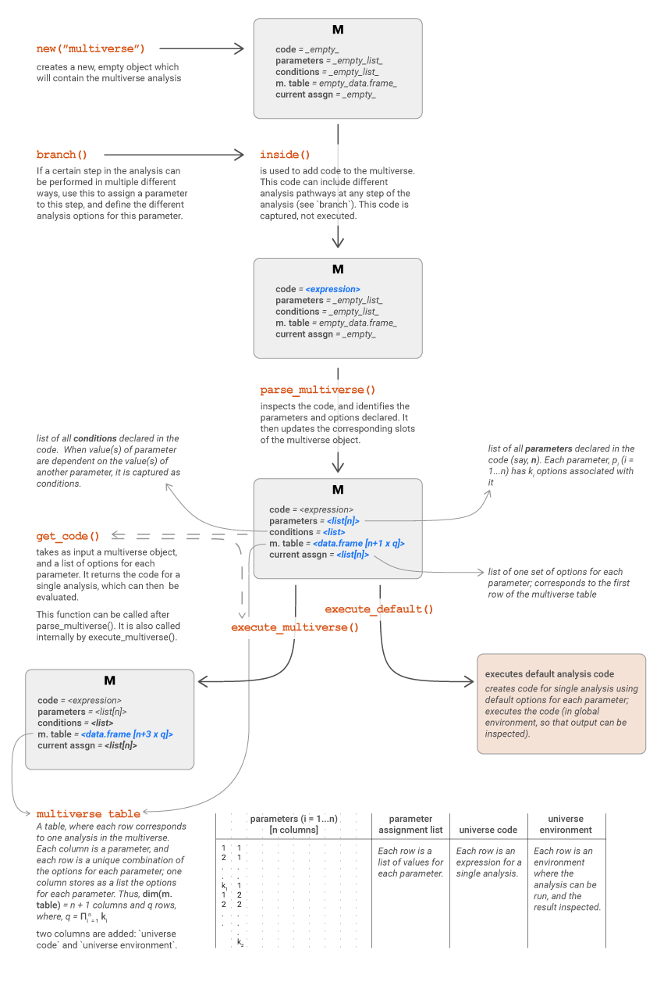
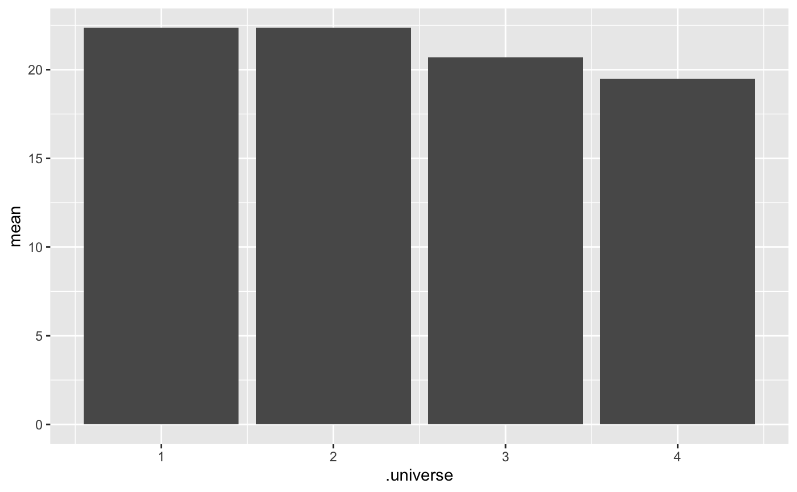

calculate-mean-multiverse.RmdIn this document, we’ll outline a simple multiverse analysis — calculating the mean of a set of numbers.
Now, there are multiple ways of calculating the mean. We could just directly call the mean() function on the data.
## [1] 22.35059Or, we could remove the outliers by removing a fraction of the values from each end. Here, we remove 10% of the values (5% from each end).
## [1] 19.49207We could also change the fraction of values that we want to trim. This can be considered a very basic multiverse of analysis, where each single analysis would comprise of calculating the mean using different values for the trim argument of the mean() function.
An overview of the steps involved in creating a multiverse analysis is shown below:

We will gradually walk through each step involved in this analysis.
In our multiverse, we want to look at the result of using different values for trim. Let’s first define the different options we want to set the value for trim to; we could choose to : - not trim i.e. trim = 0 - trim 1% of the data i.e. trim = 0.005 - trim 5% of the data i.e. trim = 0.025 - trim 10% of the data i.e. trim = 0.05
Instead of repeatedly calling mean() with different values of trim, we can use the branch() function to declare that we want to calculate mean() using different options for the value of trim. Thus, instead of passing a value to trim (which is an argument of mean()), we would pass the branch() function.
The first argument to the branch() function is the name of the parameter (here “trim_value”). The other arguments are the options which are declared syntactically as <option_name> ~ <option_calculation / option_value>. Thus the branch() indicates that a parameter can take more than one option, which are then listed.
This style of syntax allows us to declare all the possible options for this parameter at the same time.
Thus, the branch() call would resemble something like this:
We can now pass this branch to the trim argument of the mean() function.
However, for this to work, we would need to run this step within the multiverse, and not directly. To do that, we first need to create an empty multiverse object.
The multiverse object contains five components (which we will subsequently refer to as slots): code, parameters, conditions, current_parameter_assignment and multiverse_table; all of them are initialised as empty (NULL / empty list). We will describe them in more detail later.
## NULL## list()## list()## NULLInside this new multiverse object, we will declare the code to calculate the mean using four different options. The multiverse object will store all possible combinations of analysis (in this case, the analysis is calculating the mean).
When the branches are declared inside the multiverse, we can capture and store them without executing them. This way, we can capture the branches for more than one parameter, and interactively add more branches to the multiverse, so that it is easy to conduct a complete analysis. We will illustrate this later.
The inside() function takes in two arguments: 1. the multiverse object, and 2. the expression, which should be declared within {}
inside(M, {
x.mean = mean(data,
trim = branch(trim_values,
"trim_none" ~ 0,
"trim_1pc" ~ 0.005,
"trim_5pc" ~ 0.025,
"trim_10pc" ~ 0.05
)
)
})Once, code is declared inside the multiverse, this is stored inside the code component as an un-evaluated expression. This will also populate the empty slots in the multiverse i.e. identify the parameters and create a multiverse table.
## [[1]]
## {
## x.mean = mean(data, trim = branch(trim_values, "trim_none" ~
## 0, "trim_1pc" ~ 0.005, "trim_5pc" ~ 0.025, "trim_10pc" ~
## 0.05))
## }The parameter slot will have a named list of parameters (in this case, the only parameter we’ve declared is trim_values) and the options for each parameter (here, the four options).
## $trim_values
## $trim_values[[1]]
## [1] "trim_none"
##
## $trim_values[[2]]
## [1] "trim_1pc"
##
## $trim_values[[3]]
## [1] "trim_5pc"
##
## $trim_values[[4]]
## [1] "trim_10pc"The multiverse_table slot contains a tibble where each column of the tibble will be a unqiue parameter. The table will contains every possible combination of options for each parameter — the number of rows corresponds to the number of different analysis paths (here, 4).
## # A tibble: 4 x 5
## .universe trim_values .parameter_assignment .code .results
## <int> <chr> <list> <list> <list>
## 1 1 trim_none <named list [1]> <list [1]> <env>
## 2 2 trim_1pc <named list [1]> <list [1]> <env>
## 3 3 trim_5pc <named list [1]> <list [1]> <env>
## 4 4 trim_10pc <named list [1]> <list [1]> <env>The default_parameter_assignment slot will be initialised to the first option for each parameter (in this case, “trim_none”).
## $trim_values
## [1] "trim_none"This will be considered the default analysis option. We can execute this default option using the execute_default() function. execute_default() is also run everytime code is added to the multiverse, so users usually won’t need to call it.
## [1] 22.35059Or we can run the entire multiverse using the execute_multiverse() function. This will execute each analysis path in seperate environments.
multiverse_table(M) %>%
unnest( mean = map(.results, "x.mean") ) %>%
ggplot() +
geom_col(aes(x = .universe, y = mean))## Warning: unnest() has a new interface. See ?unnest for details.
## Try `df %>% unnest(c(mean))`, with `mutate()` if needed
Now, let’s introduce some missing values. We will then sample 100 values and compute the mean. Incomplete; requires the conditional assertion implementation
## Warning: unnest() has a new interface. See ?unnest for details.
## Try `df %>% unnest(c(mean))`, with `mutate()` if needed## # A tibble: 4 x 6
## .universe trim_values .parameter_assignment .code .results mean
## <int> <chr> <list> <list> <list> <dbl>
## 1 1 trim_none <named list [1]> <list [1]> <env> 22.4
## 2 2 trim_1pc <named list [1]> <list [1]> <env> 22.4
## 3 3 trim_5pc <named list [1]> <list [1]> <env> 20.7
## 4 4 trim_10pc <named list [1]> <list [1]> <env> 19.5